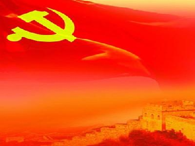
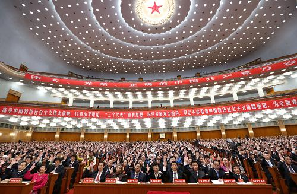
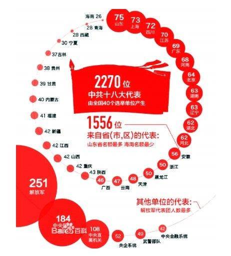

|  | 党代会的由来 中国共产党中央委员会，简称“中共中央”、“党中央”，1927.5.9之前称为中国共产党中央执行委员会。中国共产党全国代表大会为中国共产党最高领导机关。每5年举行一次，由中央委员会召集。中央委员会认为有必要，或者有三分之一以上的省一级组织提出要求，全国代表大会可以提前举行；如无非常情况，不得延期举行。职权是：讨论和决定重大问题；修改党章；选举中央委员会、中央纪律检查委员会。 |
|  | 十八大会议简介 中国共产党第十八次全国代表大会（简称中共十八大）于2012年11月8日在北京召开。十八大开幕式11月8日9点在人民大会堂举行2012年11月8日9:00在人民大会堂大礼堂举行。大会选举了新一届的中共中央领导层，包括中央委员会委员、中央候补委员、中央纪律检查委员会委员。在之后召开的中央委员会上选举中央委员会总书记、中央政治局、中央政治局常务委员会、中央书记处、中共中央军委等。 |
|  | 会议议程 一、听取和审议党的十七届中央委员会的报告 |
| 选举结果 中央委员会委员 于广洲 习近平 马凯 马飚（壮族） 马兴瑞 马晓天 王君 王侠（女） 王珉 王勇 王晨 王毅 王三运 王万宾 王玉普 王正伟（回族） 王东明 王光亚 王伟光 王安顺 王志刚 王岐山 王沪宁 王国生 王学军 王建平 王胜俊 王洪尧 王宪魁 王冠中 王家瑞 王教成 王新宪 王儒林 支树平 尤权 车俊 尹蔚民 巴音朝鲁（蒙古族） 巴特尔（蒙古族） 卢展工 叶小文 田中 田修思 白玛赤林（藏族） 白春礼（满族） 令计划 吉炳轩 朱小丹 朱福熙 全哲洙（朝鲜族） 刘鹏 刘源 刘鹤 刘云山 刘亚洲 刘成军 刘伟平 刘延东（女） 刘奇葆 刘晓江 刘家义 刘粤军 刘福连 许达哲 许其亮 许耀元 孙怀山 孙建国 孙春兰（女） 孙政才 孙思敬 苏树林 杜青林 杜金才 杜恒岩 李伟 李斌（女） 李从军 李东生 李立国 李纪恒 李克强 李学勇 李建华 李建国 李鸿忠 李源潮 杨晶（蒙古族） 杨传堂 杨金山 杨栋梁 杨洁篪 杨焕宁 肖钢 肖捷 吴昌德 吴胜利 吴爱英（女） 吴新雄 何毅亭 冷溶 汪洋 汪永清 沈跃跃（女） 沈德咏 宋大涵 宋秀岩（女） 张阳 张茅 张毅 张又侠 张仕波 张庆伟 张庆黎 张志军 张国清 张宝顺 张春贤 张高丽 张海阳 张裔炯 张德江 陆昊 陈希 陈雷 陈全国 陈求发（苗族） 陈宝生 陈政高 陈敏尔 努尔•白克力（维吾尔族） 苗圩 范长龙 林军 林左鸣 尚福林 罗志军 罗保铭 周济 周强 周本顺 周生贤 郑卫平 房峰辉 孟学农 孟建柱 项俊波 赵实（女） 赵正永 赵乐际 赵克石 赵克志 赵宗岐 赵洪祝 胡泽君（女） 胡春华 俞正声 姜大明 姜异康 骆惠宁 秦光荣 袁纯清 袁贵仁 耿惠昌 聂卫国 栗战书 贾廷安 夏宝龙 铁凝（女） 徐守盛 徐绍史 徐粉林 高虎城 郭声琨 郭金龙 郭庚茂 郭树清 黄兴国 黄奇帆 黄树贤 曹建明 戚建国 常万全 鹿心社 彭勇 彭清华 蒋定之 蒋建国 蒋洁敏 韩正 韩长赋 焦焕成 谢伏瞻 强卫 楼继伟 解振华 褚益民 蔡武 蔡名照 蔡英挺 蔡赴朝 雒树刚 魏亮 魏凤和[6] |
|